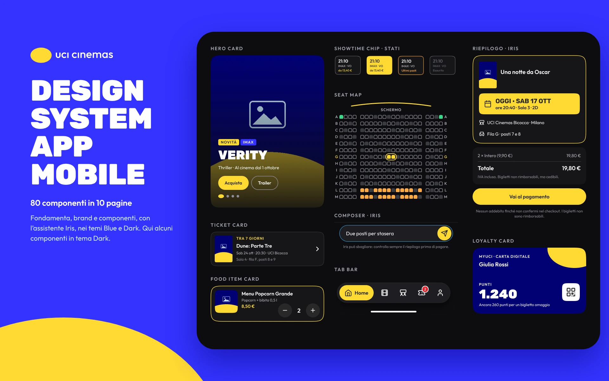

UCI Cinemas
Mobile app · brand identity · personal project
The app redesign: tickets in a few taps and Iris, the assistant that picks the film with you. 85 screens and 80 components in two themes.
Three case studies, from problem to prototype: discovery, interfaces, design systems and accessibility. They are personal projects, done independently. I’m happy to tell you about the ones that don’t fit here too.

Mobile app · brand identity · personal project
The app redesign: tickets in a few taps and Iris, the assistant that picks the film with you. 85 screens and 80 components in two themes.


Web app and mobile app · personal project
The employee area and a payslip you can actually understand: employees’ real questions at the centre, the same components on desktop and mobile.
Brand identity and mobile app · personal project
A new identity and an app for finding a home with clear prices and verified listings: 39 screens, 54 icons and a single square pixel.